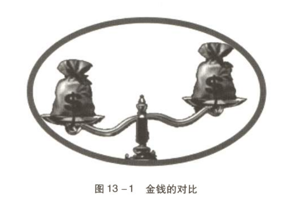
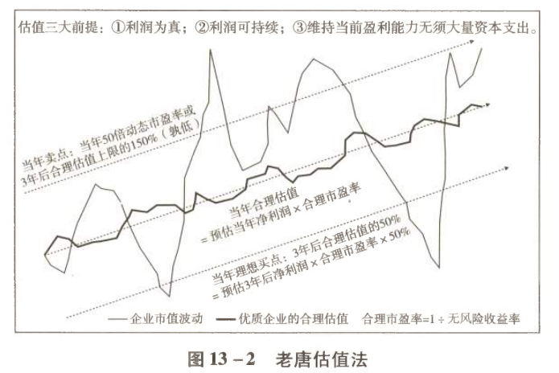

应用于实战的快速估值法
一、以长期甚至永恒的视角看待投资
1.1 "All cash is equal"就是估值大法
"All cash is equal"的意思就是：金钱都是一样的，比较它们就是了。

图13-1 能力圈内的天平：估值就是比较
图13-1外面那个圈指能力圈，圈里有个天平。投资者要做的，就是随时把自己能够理解的目标资产摆上天平，用手头现有的资产去比较，然后选择收益率明显较高的那种持有。
就好像在两个苹果之间选择较大的那个，并不需要知道两个苹果各自的重量是多少克。
而这，需要投资者具备一种长期甚至是永恒的视角。
1.2 长期视角 ≠ 持股数十年
长期或永恒的视角，并不是指我们一定要持股数十年、穿越牛熊，而是哪怕短到三五年以内的投资，也需要以一种永远放置财富的思想去对待。
对于绝大部分投资者，如果能理解投资是一件持续终身的事，那就应该确立目标：以当前社会的财富水平而言，自己在股市赚到8位数乃至9位数以前，主要还是扮演一个把财富放置进股市的净买家，顶多是期间有过短暂的、不得已的离场。
1.3 市值是盈利能力的资本化
市值是资产盈利能力的资本化，是资产盈利能力的市场交易价格。只要我们的财富始终放置在能力圈范围内、盈利能力最强的资产上，获取更高的市值就是必然结果。
| 时间维度 | 市场的角色 | 决定因素 |
|---|---|---|
| 短期 | 一台投票机 | 参与者的恐惧与贪婪 |
| 长期 | 一台称重器 | 资产真实的盈利能力 |
恐惧和贪婪可以影响短期投票，但不会影响长期称重。资本的逐利天性必将推动股价反映资产盈利能力的差异——就好像工商银行推出两种债券，其他所有条件完全一样，一种利率4%，另一种利率5%，那么任何人都会知道，5%利率债券的市场交易价格必将上涨到4%利率债券的价格之上。
1.4 ⚠️ 长期视角和长期持股不是一码事
将价值投资等同于长期持股，是市场中常见的谬误。
价值投资的本质是寻找因为市场先生的癫狂而产生的企业市值与内在价值之间的差异。正如格雷厄姆所言：
钟摆左右摆动的时间并无定数，有时长，有时短——但长短不是本质特征，围绕内在价值摆动才是本质特征。所以持股时间的长短和价值投资并不能画上等号。从金钱的时间价值上说，同样是市价反映内在价值，即便是最彻底的价值投资者，内心也是期望过程越短越好。
1.5 至少要保证三到五年不被迫变现
从长期甚至永恒的视角，我们需要忘记将资产变成现金的需求（以供自己或家庭消费），以"这笔钱永远只是用来投资增值"的思路去考虑问题。
虽然"永恒"对绝大多数投资者做不到，但至少要保证这笔资金不会在短期内被迫因某种原因必须变成现金。
经验上说，这期限至少要有三到五年，才可以避免我们被迫在股价严重低于企业内在价值时，用股票去换现金。
一旦以这种视角看待投资，关注短期股价就失去了意义。因为我们并不需要抓住某个间不容发的关键时刻，把投资品变成现金退出股市。即便卖掉了某投资品，依然需要买入其他投资品——所以它依然只是一个比较的过程，不断在目标资产中权衡哪种资产收益率较高。投资者只是在"遇到"一种投资品明显高估、收益率明显偏低的情况时，换入另一种收益率较高的资产罢了。
二、估值：简单说就是比较
2.1 一块肥沃农田的比喻
我们可以将手头的资产想象成一块肥沃的农田：
- 市场先生的收购出价如果不是"明显较高"，我们就安心种自己的地，安心收自己的粮；
- 所谓明显较高，指将卖掉这块地的所得存在银行、或购买无风险收益率产品，每年躺赚的利息也比辛辛苦苦种地的产出高。
市场先生的出价如果不是明显较高，那就是噪声，不去管它便是。
因此我们要做的，只是：
- 在市场先生平静或悲观时，依赖高盈利能力的资产获取高于市场平均回报水平的收益；
- 将这些收益继续投入高盈利能力资产，做大财富总值；
- 直到市场先生亢奋了，对我们手持的高盈利资产过度乐观，以明显较高的现金出价来要求收购时，才卖给他。
2.2 "明显较高"到底是多少？
对于"明显较高"，巴菲特做过清楚的解释：
这句话同样脱胎于格雷厄姆"股票买点为收益率高于无风险收益率两倍"的研究结果。
老唐认为它的含义还包含：估值是个区间，而且可能会错，所以若没有一倍以上空间，就算不上"明显"。
| 手中已持有 | 交换对象的预期收益率 | 是否构成引力 |
|---|---|---|
| 5% 收益率的投资品 | 10% | ✅ 构成引力，值得交换 |
| 5% 收益率的投资品 | 6%∼7% | ❌ 容错空间不够，不换 |
没有明显空间就保持原样。吸引力不够，我就不换，少做少错。
2.3 从类现金资产到指数基金：天平的另一端
当我们没有任何能力圈时，天平的一端就是保本理财、国债、货币基金等类现金资产。
而在理解了本书前面谈到的股票回报的逻辑后，至少可以将市盈率约11倍的沪深300指数基金（指2019年版完稿时的2018年10月）作为能力范围内的备选投资品，放在天平的一端。期待三到五年内两件事叠加，给我们带来满意的回报：
- 沪深300指数里300家公司的盈利总额不断提升；
- 市场先生推动沪深300指数收益率从9.1%跌至无风险收益率（即期望市盈率从11倍上升至约25倍）。
当年的测算示例（假设未来三年）：
| 假设项 | 取值 |
|---|---|
| GDP年增长 | 6% |
| CPI年增长 | 2% |
| 名义GDP增长 | 8% |
| 沪深300成分股盈利增速 | 保守假设与名义GDP同步 |
| 三年后利润总额 | 1 × 1.08³ ≈ 1.26（提升26%） |
| 投资收益率 | 从9.1%下降到6%（市盈率11倍 → 16.7倍） |
2.4 三年后的真实数据复盘
老唐特意保留了2019年版《价值投资实战手册》中列举的数据，因为此刻正好时隔三年，可以回头用真实数据验证当年的想法。
| 起止区间 | 510300涨幅 | 510310涨幅 | 当初预期 |
|---|---|---|---|
| 2018年10月底 → 2021年10月底 | 3.009元 → 4.904元，约63% | 1.365元 → 2.277元，约67% | 91% |
| 2018年末 → 2021年末 | 71.7% | 76% | 91% |
回报没有达到预期的原因：直到2021年末，沪深300指数市盈率也只有约14.5倍，没有达到三年前预期的16.7倍。
2.5 市盈率迟迟不上升怎么办？——凉拌！
若市盈率就待在14.5倍迟迟不上升，也就是说沪深300指数的收益率还维持在1 ÷ 14.5 × 100% ≈ 6.9%水平，继续远高于无风险收益率，此时怎么办呢？凉拌！
因为其收益率高于无风险收益率，所以只需要继续拿着就好：
- 一边坐等成分股企业盈利总和的持续增加；
- 一边等待（不知道何时会到来）收益率向无风险收益率靠拢。
等待期间的两种调换情形：
| 触发情形 | 应对动作 |
|---|---|
| 通过研究学习，发现某品种收益率明显高于沪深300指数基金 | 换入新品种 |
| 因盈利下降或市盈率上升，沪深300指数基金收益率明显低于货币基金 | 换入货币基金 |
从这个角度考虑，自然就不需要所谓满仓、半仓或空仓等仓位概念。 因为类现金资产也是候选投资品，投资者只是永远在自己能够理解的候选投资品范围里，选择收益率明显较高的那个。这样，股票、债券、货币基金、存款乃至所有的投资对象，都可以纳入同一个思维框架下决策。
2.6 芒格与《财富》杂志的印证
估值这件事其实就这么简单，只是不同资产之间盈利能力的比较。正如芒格在回答"您是怎么估值的"时说：
"与其他机会比起来，这些机会稍微好那么一些"——这就是估值的全部。
更强的盈利能力，逐利的资本必将推高其价格，这与你我是否想赚股价上涨的差价完全无关。正如巴菲特在1987年致股东信里引用的《财富》杂志研究成果：
三、老唐估值法：三句话的实战体系
3.1 三句话总纲
在"估值就是比较"（All cash is equal）伟大理念的帮助下，老唐将自己的投资实战体系简化为三句话（后文简称老唐估值法）：
符合三大前提的企业，三年后合理估值 = 第三年预计自由现金流 ×（1 ÷ 无风险收益率），高杠杆企业打七折。
其中"1 ÷ 无风险收益率"称为"合理市盈率"。
② 买点与卖点
三年后合理估值的50%为目前的理想买点；
三年后合理估值 × 150%或当年50倍动态市盈率，二者中较低值为一年内卖点。
③ 操作纪律
买点买入，卖点卖出，中间呆坐不动。
合理市盈率取值对应表：
| 无风险收益率 | 合理市盈率（1 ÷ 无风险收益率） |
|---|---|
| 3%∼4% | 25∼30倍 |
| 5%∼6% | 15∼20倍 |
| 以此类推 | …… |
就是这么简单！这个简化的估值方法也可以用图13-2来演示。

图13-2 老唐估值法示意
四、合理估值
做投资决策，必须首先估算出企业的内在价值。只有存在一个估值——可以是一个数值，也可以是一个区间——才能接着谈论便宜或昂贵、评价高或低，否则投资者就是跟随股价波动的木偶，被市场先生牵着走。
4.1 运用老唐估值法的三大前提
投资领域里估值的方法很多，每一种估值方法都有它适应的企业，也有它无法覆盖的局限。
一位成熟的投资者注定是从千千万万投资对象中选择适合自己估值标准的目标投资，而不是根据每一只股票的特殊情况去修正自己的估值方法。
老唐估值法也一样，只有符合三大前提的企业才可能成为选择目标。不符合三大前提的企业，无论是十倍还是百倍涨幅，我一律视而不见、听而不闻。
| 前提 | 排除掉什么 | 留下什么 |
|---|---|---|
| ① 利润为真 | 三种赚"假"钱的企业 | 赚真钱的企业 |
| ② 利润可持续 | 无法确认竞争优势能否长期存在的企业 | 产品或服务被需要、很难被替代、价格不受管制的企业 |
| ③ 维持当前盈利能力不需要大量资本投入 | 查理·芒格讨厌的第二种生意 | 第一种生意 |
关于第三条前提的两点澄清：
- "维持当前盈利能力不需要大量的资本投入"，可以理解为每年的折旧摊销足够满足维持当前盈利能力所需的资本投入；
- "维持当前盈利能力"指企业净利润保持当下购买能力，即净利润能大致保持与通胀同水平提升。
除此之外，企业为获取更多市场份额或更高盈利而做出的扩张性资本投入，不计入"维持当前盈利能力所需的资本投入"。
4.2 📝 三大前提的原文回顾
回顾一：什么叫赚的是"假"钱？（摘自本书第130页）
| 类型 | 表现 | 问题所在 |
|---|---|---|
| ① | 利润主要来自应收账款 | 商品或服务卖出去了，但没收到钱，只是赊账、是欠条。按会计规则可以产生报表净利润，但那只是个数字 |
| ② | 利润靠变卖资产或资产重估获得 | 变卖资产不可持续；资产重估只见数字不见钱，使用报表净利润评估企业就会高估企业价值 |
| ③ | 某些金融企业的报表利润依赖一大堆参数假设 | 参数的微小波动会导致报表利润乃至净资产巨大波动，甚至在大赚和大亏之间波动，而这些参数在很长时间内既无法证实也无法证伪 |
回顾二：竞争优势企业的三个特性（摘自本书第66页）
回顾三：芒格讨厌的第二种生意（摘自本书第131页）
4.3 ⚠️ 不符合三大前提 = "太难"，直接避开
但凡不符合这三大前提的，就属于自己看不懂的企业，更无从谈及估值的问题，直接归为"太难"，避开就是了。
但是，这并不意味着这些企业的股价不会上涨。股市里亏损企业股价上涨数百倍的并不少见，只不过它们不属于老唐估值法能够覆盖的范围，需要以其他思路去估值：
- 风险投资
- 赛道投资
- 可比估值
- 清算价值或重置价值估值
- 分红折现法
通俗地说，就是"不是我们的菜"。
4.4 底层逻辑：平等对待所有资产的自由现金流
通过对企业的深入研究，认为该企业满足上述三大前提之后，我们就可以进入估算企业自由现金流的步骤了。
注意：这部分并没有什么财务指标，也不能直接从财报里提取某个数据。它只能是我们深入理解企业后作出的一个判断，一个不需要很精准的大致判断。这是老唐估值法里唯一的未知数。
自由现金流的取值规则：
| 企业情况 | 自由现金流取值 |
|---|---|
| 完全符合三大前提（净利润为真、可持续、维持盈利能力无须大量资本投入） | 基本可直接将报表净利润①视为自由现金流 |
| 各方面基本符合，仅因某个特殊原因导致现金流不够完美，但尚在可接受范围内 | 净利润打模糊折扣，老唐个人通常直接采用八折 |
| 打八折后仍不能放心地视为自由现金流 | 说明你暂时还不能或不敢确信它符合三大前提，直接归入"太难"，剔除或等待后续研究 |
① 估值章节提到净利润时，若无特别注明，一律指归属于上市公司股东的净利润。
"可接受范围内的瑕疵"举例：
- 因客户具备高信用且地位强势（政府、央企等）或商业模式的特殊性等因素，导致应收账款金额较大但基本确定可以收回；
- 管理层对内部股权激励过于大方。
4.5 无风险收益率如何取值
确认企业符合三大前提之后：
比如最近几年无风险收益率在3%∼4%波动，这个"1 ÷ 无风险收益率"的值就可以取25∼30倍（精细地取值到25∼33倍也可以）。如果无风险收益率出现显著变化，比如变成5%∼6%或2%∼3%，估值时用到的倍数也需要跟着调整。
无风险收益率的取值来源：
| 优先级 | 取值方式 |
|---|---|
| 主要 | 十年期国债收益率与AAA级企业债券利率二者之间的较大值 |
| 参考 | 银行短期低风险理财产品年化收益率 |
举例：民生银行天天可存可取的高流动性理财产品"天天增利"，今天显示的年化收益率为3.17%，我们就可以近似地将市场无风险收益率看作3%∼4%。
4.6 公式背后的含义：一优一劣的模糊对冲
企业股权相对于类现金资产，有一个优势和一个劣势：
| 维度 | 企业股权 |
|---|---|
| 优势 | "可能"会有较高增长，即未来盈利能力"可能"比今天更强大 |
| 劣势 | 收益的确定性不如类现金资产，其未来盈利是估算的（或者说是猜测的），并不是确定数 |
这个公式背后的含义，就是将这一优一劣做了模糊的对冲抵消，将三年后的企业股权和一定数量的类现金资产画上等号——这个"一定数量的类现金资产"就是企业股权三年后的合理估值。
它背后是这样一个认定过程：
之所以称为合理"估"值，是因为它虽然看上去是一个精确的数字，但实际上仍然是多种假设下估算出来的模糊值。
4.7 两个计算实例
实例一：净利润全额视为自由现金流
| 条件 | 数值 |
|---|---|
| 三年后预计净利润 | 100亿元 |
| 是否符合三大前提 | 符合，报表净利润可视为自由现金流 |
| 市场无风险收益率 | 4%（简化起见，直接以固定数值表示） |
简化表述：三年后的25倍市盈率是该企业的合理估值。
实例二：净利润打八折
同样是这家企业，三年后净利润估算为100亿元，符合三大前提，但某些方面略有瑕疵，净利润不能全部视为自由现金流，需要打折处理（老唐习惯打八折）：
简化表述：三年后的20倍市盈率是企业合理估值。
需要特别强调：虽然此时看上去是将三年后合理市盈率从25倍降低为20倍，但实际上市盈率没有调低，仍然固定等于无风险收益率的倒数（1 ÷ 4%）。实际调低的是"自由现金流占净利润比例"的判断，只是简化表述看上去仿佛是调低了市盈率。
4.8 合理市盈率不看行业，也不看历史波动区间
这个"合理市盈率 = 1 ÷ 无风险收益率"：
- ❌ 不区分行业特点；
- ❌ 不参考个股历史市盈率波动区间。
无论该企业过去波动于50∼200倍市盈率，还是2∼10倍市盈率，那都是市场先生的出价，没有逻辑支撑。只要自己判定该企业净利润为真、净利润可持续、维持当前净利润水平无须大量资本投入，三年后合理估值的市盈率倍数就等于"1 ÷ 无风险收益率"。
这是基于"All cash is equal"的估值原理，平等对待所有资产自由现金流的估值方法。没有哪类资产、哪个行业或者哪家企业，赚到的真金白银更高贵或更低贱——无论是卖茅台酒、卖煤炭、卖房子或者存银行，其赚到的"现金"都是平等的，不分高低贵贱。
注意：不是报表净利润平等，是现金平等。
4.9 企业的成长预期在估值过程中如何体现？
然而，卖茅台酒、卖煤炭、卖房子或者存银行，其获取现金的确定性、能持续获取现金的数量、面临的竞争环境以及持续获利所需的资本投入是不一样的。对此，估值过程需要有所反应，即估值要反映对企业的成长预期。
老唐估值法通过两个途径去反映这些区别：
途径一：在无风险收益率取值区间内取上限、中值或下限
通过取下限、中间值或者上限，体现少许的保守或乐观，反映自己对企业盈利质量、确定性及成长性的看法。
| 标的类型 | 合理市盈率取值（无风险收益率3%∼4%时） | 理由 |
|---|---|---|
| 贵州茅台、腾讯控股 | 30倍（上限） | 现金流长期优于报表净利润、未来成长的确定性比较高 |
| 其他个股 | 中值27.5倍或下限25倍 | 常规处理 |
途径二："三年"这个跨度本身就是容器
老唐估值法计算的是三年后合理估值，使用的变量不是当年自由现金流，而是三年后自由现金流。这个"三年"，就是为了容纳和反映投资者对不同类型企业的理解和认知。
投资者对不同企业面临的竞争环境、获利的确定性、成长性的不同看法，全都落实在对三年后净利润的预判里。
4.10 为什么采用三年，而不是五年、十年或更久？
| 原因 | 说明 |
|---|---|
| ① 隔离短期情绪的最短期限 | 经验上说，以三年去衡量一笔投资是隔离短期情绪干扰的最短期限。巴菲特多次明确强调："我认为三年绝对是评判投资绩效的最短周期。" |
| ② 避免误差被复利放大 | 预判未来是困难的，所有估算一定有偏差。时间跨度拉长，很小的偏差也容易被复利效应放大到无法接受的程度。只预判三年，即便业绩预测有误差，程度往往也能够被股市无厘头的市盈率波动弥补，从而减少亏损的可能性。 |
| ③ 匹配年化25%的目标 | 老唐给自己设定的期望值是年化收益率25%左右。通过估算三年后合理估值，然后按照它的一半位置买入，相当于目标定在三年翻倍，折合年化26%，既接近25%理想目标，也便于快速口算。 |
为什么25%是"有希望冲击"的目标？
25%的年化收益率，是老唐认为按照"买股票是买入企业所有权的一部分"思路，有希望冲击的理想收益率目标。毕竟有据可查的同类型顶级投资大师贡献的长期年化收益率（费前）基本就在20%∼30%：
| 投资大师 | 载体与跨度 | 年化收益率（费前） |
|---|---|---|
| 沃伦·巴菲特 | 伯克希尔-哈撒韦57年（截至2021年末） | 20.2% |
| 沃尔特·施洛斯（巴菲特的大师兄） | 一生投资跨度47年 | 20.1% |
| 彼得·林奇 | 麦哲伦基金全部13年公开业绩（正逢美国股市大牛市） | 29.2% |
4.11 需要特别对待的高杠杆企业
在上述计算过程里，对于高杠杆企业需要特殊处理——对三年后合理估值打七折。
负债率的分级判断：
| 负债总额 / 资产总额 | 判定 |
|---|---|
| ≥ 60% | 比较激进的企业类型。如果遇到宏观或行业的突变，企业陷入困境的可能性会比较大 |
| ≥ 70% | 可划为高杠杆企业 |
达到70%意味着：企业总资产里只有30%属于股东，然后企业用这30%的净资产撬动了超过两倍的杠杆投入运营。高杠杆会放大企业的利润或亏损，使企业对宏观环境、信贷环境及市场竞争环境更加敏感，所以投资者需要通过更加保守的估值、预留更大的安全边际去应对。
⚠️ 关键区分：经营占款 ≠ 有息负债
实践中有些企业在产业链上处于强势，通过延缓支付上游供应商货款或预收下游客户（经销商或消费者）预付款的形式，也会提升企业的负债率水平——但这种占款和付息借来的有息负债①有逻辑上的区别，不应同等对待。
① 企业支付利息借来的有息负债，通常出现于合并资产负债表的短期借款、交易性金融负债、一年内到期的非流动负债、长期借款、应付债券、其他非流动负债科目。金融类公司通常还应包含向央行借款、拆入资金等科目。
两种可行的筛选口径：
| 方法 | 具体做法 |
|---|---|
| 方法一（老唐习惯） | 将经营过程中不用支付利息的经营占款剔除，只将"有息负债 / 资产总额 ≥ 70%"的企业视为高杠杆企业 |
| 方法二 | 将"负债总额 / 资产总额"的分子分母同时剔除四个科目——应付账款、应付票据（占用上游款项）和预收账款、合同负债（占用下游款项），得出一个调整后的负债率来筛选 |
方法二相当于将经营过程中占用上下游的资金及由此形成的对应资产一起剔除后观察负债率。
以上分拆讲解的是老唐估值法的第一句：符合三大前提的企业，三年后合理估值 = 第三年预计自由现金流 × 合理市盈率，高杠杆企业打七折。
4.12 零利率环境下的估值问题
然而，有一种特殊情况需要特别补充：无风险收益率超低甚至是零利率的市场环境下，如何对无风险收益率取值？
既然企业的合理市盈率倍数受无风险收益率变动影响，那么假如无风险收益率非常低，比如1%，乃至极端情况下的零利率，合理市盈率就是100倍甚至无穷大吗？
先澄清什么是"零利率"
我们通常听到新闻说某国央行实施零利率政策，那并不是针对投资者的，企业家在市场上也借不到不要利息的资金。
| 概念 | 实质 |
|---|---|
| 央行的零利率政策 | 一种宏观调控政策，是央行给银行放款的利率，目的是推动银行向市场投放更多信贷，推动市场货币供应量上升 |
| 市场无风险收益率 | 并不会因此为零。不过实施零利率政策的国家，通常无风险收益率确实会比较低，比如低至1%左右 |
巴菲特的回答（2003年伯克希尔股东大会）
1%的无风险收益率，可以直接给予100倍合理市盈率吗？有股东问过巴菲特这个问题：
巴菲特没有说透，但其实不难理解——两个原因
| 原因 | 说明 |
|---|---|
| ① 无风险收益率不限于本国 | 在没有外汇管制的国家和地区，无风险收益率是指投资者能够自由投资的任何国家或地区的无风险产品收益率。因此央行即使采用零利率刺激政策导致该国利率非常低，投资者仍然要看本国投资者有权投资的其他国家或地区的无风险产品收益率，并取其较高值作为股权合理估值的参照物。这依然是"All cash is equal"体系下的比较 |
| ② "法币"天然有通胀属性 | 政治学界和经济学界普遍认为2%左右的通胀是"好的、良性的"水平，可以更好地刺激投资和消费 |
关于2%通胀目标的最新例证：
| 时间 | 人物 | 表态 |
|---|---|---|
| 2021年11月中旬 | 英国央行首席经济学家休·皮尔 | "我个人和英国央行货币政策委员会都致力于实现2%的通胀目标。" |
| 2022年2月 | 日本央行行长黑田东彦 | "工资、物价必须同时上涨，才能达到2%的通胀目标。" |
| 2022年2月 | 欧洲央行行长、欧洲央行首席经济学家、加拿大央行行长、瑞士央行行长等 | 均有类似言论 |
他们的言论都反映了一个基本认知：2%左右的通胀水平是好的、良性的通胀水平。
一般来说，人们预期的无风险收益率应该高于"好的"通胀率水平（只有如此，资金出借才有真实收益）。即使无风险收益率短期低于2%，宏观调控部门也会引导投资者预期它只是短期现象，很快就会提升。这种预期下，短期超低利率水平很难成为市场合理估值参照标准。
五、买点和卖点
接下来我们看老唐估值法的第二句：三年后合理估值的50%为目前的理想买点；三年后合理估值 × 150%或当年50倍动态市盈率，二者中较低值为一年内卖点。
5.1 理想买点：合理估值的50%
这句话不难理解——如果三年后合理估值是1000亿元，那么当前500亿元市值就是理想买点。
合理估值和理想买点之间的差距，就是投资者给决策预留的安全边际：
| 未来实际情况 | 安全边际的作用 |
|---|---|
| 企业净利润低于自己的预判 | 防止自己出现大幅亏损 |
| 企业净利润等于或大于自己的预判 | 自己占到了市场先生的便宜 |
它的价值在于帮助我们在判断错误的时候少亏、不亏甚至依然有赚（只是比预想获利幅度小）。
这个50%的幅度设定，一脉相承来自：
- 格雷厄姆的"我设定的买点就是当前AAA级债券利率水平的两倍"；
- 巴菲特的"如果国债收益率为2%，那么收益率低于4%的企业我们是不会投的"。
同时，它又是两段式自由现金流折现的简化模拟版本。
5.2 实战中简化版的两段式自由现金流折现
当我们将三年后企业的合理估值视为同等盈利能力的类现金资产时，按照两段式自由现金流折现法的标准计算方法，需要三步：
- 将最近三年的自由现金流折现加总，得到第一段折现值；
- 将三年后合理估值也折现到今天，得到第二段折现值；
- 将两段折现值相加，便可以得出该企业今天的价值。
完整计算示例
| 条件 | 数值 |
|---|---|
| 无风险收益率（折现率） | 4% |
| 当年净利润 | 100亿元 |
| 未来三年预测净利润 | 120亿元、140亿元、180亿元（仅为举例示意数字） |
| 是否符合三大前提 | 完全符合，报表净利润可视为自由现金流 |
将该企业三年之后仍然可能具有成长性的优势与未来收益确定性低于100%的劣势相互抵消后，可以将该企业三年后的状态视为一份每年产生180亿元自由现金流的债券：
此时，将该企业前三年的自由现金流也视为这份"债券"产生的利息，同样按照无风险收益率折现到今天：
≈ 115.4 + 129.4 + 160 + 4000
≈ 4404.8亿元
5.3 为什么不能按算出的当前价值直接买入？
由于我们的估算建立在很多假设之上，而这些假设可能会出错，所以不能直接按照计算所得的当前价值买入。
用当前价值买入，等于是预期自己的假设100%正确时，可以获取相当于折现率的回报。显然投资者既不能确定自己100%正确，也不会满足于相当于折现率的回报。
因此我们要在当前价值的某个折扣值以下买入，预留一定的安全边际，给假设出错或没有预料到的意外事件留下缓冲空间，并意图在出现这些错误或意外后，依然能够获得较好的投资收益。
安全边际究竟要留多大？
这并不是个严谨的计算，只是一种经验观察。观摩投资大师们的历史经验，他们一般买入出价是企业价值的四到七折。
巴菲特在1997年伯克希尔股东大会上曾这样谈过自己对安全边际大小的认识：
就好比，有一座承重1万磅的桥距离地面只有6英寸，你可能会愿意驾驶载有9800磅货物的卡车通过。但是，如果这座桥坐落在大峡谷之上，你可能就想得到大一点的安全边际，或许只考虑驾驶载重4000磅货物的卡车通过。也就是说，要求多大的安全边际取决于潜在的风险。"
5.4 为什么可以省略折现过程？
老唐估值法里，简单粗暴地按照合理估值的50%设置理想买点。按照上文案例，两种算法的结果对比：
| 算法 | 计算过程 | 理想买点 |
|---|---|---|
| 严格折现后打五折 | 4404.8 ÷ 2 | 2202.4亿元 |
| 老唐简化法（省略折现，直接对三年后合理估值打五折） | 4500 × 50% | 2250亿元 |
简化法得到的2250亿元，相当于经过折现计算后4404.8亿元的51%，与标准五折2202.4亿元相差不大，却利于记忆和口算。
所以，直接取三年后合理估值的50%为理想买点的做法，实际就是两段式自由现金流折现法的近似模拟，是为了日常运用方便的一种简化处理。
它的潜在目标是追求年化约26%的收益率。当然，这个26%目标包含了一定的安全边际，保证部分投资对象较预期出现较大偏差时，仍然能够获得超过市场平均水平的回报（老唐通常将10%±2%视为市场平均回报水平，即长期投资指数应该获得的收益率）。
它类似于努力目标100分，即便情况不理想，实际得分80也挺好。
5.5 理想买点执行中的核心：投资者内心的比较
理想买点的设定，并不意味着股价一定能到，或者到了以后就不会再跌，这完全是两码事。
它只是一个投资者内心的比较，认为这个位置用现金交换企业股权是划算的，是占到了市场先生的便宜，未来能够给自己带来更多自由现金流。它完全不涉及对股价的判断。
情形一：到了理想买点后继续下跌
这种情形其实很容易处理。既然觉得五折划算，只要确信企业的真实盈利能力没有发生恶化，那么四折三折毫无疑问就是更划算：
- 有钱就继续买；
- 没钱就把占便宜的机会留给其他人享受。
正如摩根士丹利前首席战略官巴顿·比格斯所言：
投资者在市场获利，并不需要恰好买在最低点，也不应该预期自己恰好买在最低点。
情形二：手里有钱，但价格尚未触及理想买点
这种情况稍微难处理一些——此时投资者应该等待呢，还是可以提前买入？
这个问题没有标准答案。 只要在合理估值之下，用现金去交换股权，逻辑上都是正确的。至于预留安全边际的大小，既取决于自己对企业的确定性认识，也取决于自己对波动的承受能力——尤其是后者。
| 你的性格倾向 | 建议策略 | 可能的利 | 可能的弊 |
|---|---|---|---|
| 对波动无感，更在意最终收益率 | 合理估值之下就可以考虑买入 | 可能抓住企业一直被业绩推着走的利润 | 理想买点到来时手中已经没钱了，只能呆看 |
| 宁愿收益低点，也不想承受大幅波动 | 等到理想买点再动手 | 买得更便宜，波动承受压力小 | 可能一直等不到，错过被业绩推着走的行情 |
这个区间的决策无所谓对错，两种选择各有利弊，不存在完美的最优策略。关键是投资者要提前想明白自己决策的依据和利弊，并坦然接受结果。
投资者真正要克服的是：一旦后来市场走势和自己选择不同，就开始后悔和反思，甚至惊慌失措。
典型的"没想明白"：原本认为自己对波动无感、目标是高收益，然后合理估值之下就买了，结果股价真的下跌到理想买点甚至更低（这是相当正常和常见的波动），却开始后悔自己买早了，甚至忐忑不安、割肉认赔。
5.6 ⚠️ 被严重误解的巴菲特理念："永不卖出"
在投资领域里，有一种讹传：说长期持有、永远不考虑卖出、完全以获取企业分红为目标，才是正统的价值投资。持这种言论的人，常常以巴菲特长期持有可口可乐、不管股价高低只收分红而不卖出为榜样。
然而，这其实是一种非常严重的误解。 巴菲特本人多次承认，没有在1998年50倍以上市盈率时卖出可口可乐，是一个应该反省的错误（参看《巴芒演义》第277∼293页）。
巴菲特的原话反省
1998年6月末，可口可乐股价收于85.5美元/股，市盈率超过50倍，巴菲特持有的两亿股可口可乐市值超过170亿美元。当时巴菲特没有卖出，他后来反省道：
"我当时在想些什么，我自己也觉得非常奇怪。"
23.5年的真实账本
之后巴菲特对可口可乐没有买入也没有卖出，一直持有至今。这期间仅因2012年8月股份一拆二（相当于我国股市的10股转增10股），使他的持股数量变成4亿股。
| 项目 | 数值 |
|---|---|
| 1998年6月末持股市值 | 170亿美元 |
| 2021年末持股市值（4亿股 × 59.21美元） | 236.84亿美元 |
| 期间累计现金分红（23.5年） | 87.16亿美元 |
| 合计（不计分红再投入） | 236.84 + 87.16 = 324亿美元 |
| 23.5年累计获利 | 约90% |
| 年化收益率 | 约2.8%（甚至低于部分债类产品） |
如果当年卖出会怎样？
如果1998年巴菲特卖掉可口可乐，哪怕不考虑其他优质企业股权，仅仅拿换取的170亿美元现金投资S&P 500指数基金：
| 项目 | 数值 |
|---|---|
| 期间（1998年6月底—2021年末，共23.5年）S&P 500指数基金年化收益率 | 略高于8% |
| 170亿美元可以变成 | 1000亿美元以上 |
因此，50倍市盈率以上不卖可口可乐是巴菲特犯下的错误，而不是值得学习的成功案例。也正是在可口可乐案例的教育下，巴菲特从2000年后再也没有说过对任何上市公司的持股是"永远不卖"的"非卖品"。
归根结底：投资是比较，是不断比较不同资产的收益率，然后将资本永远配置于收益率明显更高的资产上。因此，当股权处于明显高估状态时（收益率过低），用它交换类现金资产才是标准的、有逻辑支持的投资行为。
对于何处是明显高估，不同投资者之间可能会有分歧，这很正常。但"永远不卖""死了都不卖"等口号，绝不是价值投资的标签。
5.7 应该考虑卖出的三种情况
老唐估值法设立的一年内卖点是：三年后合理估值 × 150%或当年50倍动态市盈率，二者中的较低值。
通常来说，出现以下三种情况的任何一种时，投资者都应该考虑卖出持股：
| 情况 | 说明 | 注意事项 |
|---|---|---|
| ① 企业基本面恶化 | 无论是自己起初看漏了什么条件，或者伴随时间推移企业内外部环境发生变化，导致原来认定企业应该具有的竞争优势和盈利能力减弱或丧失 | 投资者需要及时认错卖出 |
| ② 出现更具性价比的投资对象 | 内在价值100的股票市价只有90，本来应该继续持有；但你确信发现了另一家内在价值100而市价只有40的目标，且手中没有其他可调用资本 | ⚠️ 一定要慎重！ 比较两只股票，既要比较收益率，还要考虑确定性和未来成长，难度远高于一只股票和类现金资产之间的比较 |
| ③ 估值过高 | 价值投资的核心特征就是占便宜，是五毛买一元，是一元卖两元 | 买入要市值"显著"低于合理估值；卖出要市值"显著"高于合理估值。否则就呆坐不动，拒绝交易 |
为什么必须利用过度贪婪？
纵观人类投机史，资本市场的疯狂从来不会"恰到好处地在合理位置停下"。人们的情绪总是在过度恐惧和过度贪婪之间摇摆，就好像一个钟摆围绕着中点（合理估值）荡来荡去。
投资者来到这个市场，利用人们的过度恐惧买入；同时也别放过人们的过度贪婪，在钟摆荡向另一边卖出，获取最大化利润，才对得起自己的研究时间和投入资本。
5.8 如何界定估值过高？
老唐估值法里给出一个清晰的标准：
为什么是50倍市盈率？——来自经验的推演
在人类永远不变的贪婪和恐惧以及资本的逐利天性推动下，股市估值水平通常会在三到五年内形成一个起落。在无风险收益率为4%左右的情况下，股权估值达到50倍市盈率后（收益率低于2%后），一般来说三年内出现估值回落是大概率事件，值得用股权交换类现金资产。
计算过程：
| 步骤 | 计算 | 结果 |
|---|---|---|
| ① 假设企业未来三年年化增长25%，今年净利润为1元 | 1 × 1.25³ | 三年后净利润 ≈ 1.95元 |
| ② 今天50倍市盈率卖出得款50元，按4%无风险收益率计算 | 50 × 1.04³ | 三年后这笔钱 ≈ 56.2元 |
| ③ 三年后估值若回落至合理水平（25倍市盈率） | 25 × 1.95 | 届时股价 = 48.75元 |
三种可能性的概率判断：
| 情形 | 结果 | 老唐依据历史经验的概率判断 |
|---|---|---|
| ① 卖出后三年内回落至合理估值，同时企业保持年化25%增长 | 50倍卖出能保证占到便宜 | 概率偏高 |
| ② 回落时间短于三年，或企业年化增长低于25% | 能占到更多便宜 | 概率偏高 |
| ③ 卖出后持续高估长于三年，或企业年化增长持续高于25% | 卖出也可能吃亏 | 概率偏低 |
5.9 为什么还要加一个"150%"卖点？
老唐估值法还设置了另一个卖点：市值超过三年后合理估值上限的150%。在"50倍市盈率"和"三年后合理估值上限的150%"两个卖点中，哪个先触发就按照哪个卖出。
两个卖点在什么时候基本等价？
实际上，当我们假设企业的增长率为两倍无风险收益率时，两个卖点的数值基本等价。
举例：假设今年企业净利润为单位1，50倍市盈率对应价格为50。若此时无风险收益率为3%∼4%，企业增长率为8%：
| 项目 | 计算 | 结果 |
|---|---|---|
| 三年后净利润 | 1 × 1.08³ | ≈ 1.26 |
| 三年后合理估值（取25∼30倍市盈率） | 1.26 × 25 ∼ 1.26 × 30 | 31.5∼37.8 |
| 合理估值上限的150% | 1.26 × 30 × 150%，或34.6 × 110% × 150% | 56.7 ∼ 57.1 |
| 今天收到50元买4%理财，三年后本息和 | 50 × 1.04³ | ≈ 56.24 |
关于估值区间的表达习惯：老唐每周定期在"唐书房"发布的"老唐实盘周记"中，会在表格里写作"34.6±10%"，以强调"估值是个区间，而不是一个精确的数值"的概念。
为什么增长率高的企业，卖点基本就是50倍市盈率？
老唐选择企业，偏重于那些预计增长率会高于8%的企业（看对看错是另一个话题），也就意味着卖点基本上就是当年的50倍市盈率。
5.10 "150%"规则真正要容纳的两种情况
看上去设置这个150%的并列项似乎没有必要，但它的价值在于可以容纳另外两种情况：
情况一：无风险收益率较高
| 条件 | 数值 |
|---|---|
| 无风险收益率 | 5%∼6%（三年后合理估值市盈率只能对应15∼20倍） |
| 今年利润 | 单位1 |
| 年化增长 | 15% |
| 三年后合理估值上限的150% | 1 × 1.15³ × 20 × 150% ≈ 45.6 |
45.6低于当年的50倍市盈率，提前触发卖出。在无风险收益率较高的时候，股票的估值中枢本来就应该比较低，提前卖出就是我想要的。
情况二：预计增长率非常低
有时某些企业符合三大前提，只是因为预期增长很小、不增长甚至轻微负增长，市场给予它的估值太低。这种企业老唐也可能会买入，买入的主要目的是获取估值回归的利润。
| 条件 | 数值 |
|---|---|
| 今天利润 | 单位1 |
| 未来三年预计年化增长 | 1%（三年后净利润约1.03） |
| 三年后合理估值上限的150% | 1.03 × 30 × 150% = 46.35 |
46.35先于当年的50倍市盈率触发卖出。对于预计年增长低至1%的企业，市场能给到46倍市盈率时，要么是严重高估，要么是我对企业增长的判断可能有问题。无论哪种情况，都不支持继续持有，此时不需要再等50倍市盈率。
以上两种情况，就是在"50倍市盈率"之外设置"三年后合理估值上限的150%"规则的意义所在。
六、持有：中间呆坐不动
有了理想买点，有了一年内卖点，剩下的事情就是持有、等着赚钱，即"买点买入、卖点卖出，中间呆坐不动"。
6.1 ⚠️ 估值与预测股价毫无关系
对于很多人来说，投资股票之所以难，就是因为股票时时刻刻有个上蹿下跳的股价，老是勾引人踏入歧途。很多朋友看过老唐估值法后的第一反应是：
如果你大脑里是这种反应，那你就是错误理解了老唐估值法。
估值不是预测股价。老唐估值法对于符合三大前提的企业，在无风险收益率为3%∼4%的区间时取25∼30倍市盈率为合理市盈率，以及选择达到50倍市盈率时卖出，"绝对不是"判断股价会涨到25倍、30倍或50倍市盈率。
在老唐的投资体系里，不会以预测股价为前提去做决策。三年后这家企业跌到5倍市盈率，或者涨到200倍市盈率，都不奇怪。因为老唐估值法的基本原则就是：
老唐估值法的所有估值数据和过程，体现的都是一个比较，是一个是否划算的概念，是永远选择盈利能力明显更强资产的资本配置行为。
至于投资对象的市值增长，只是由于资本在逐利天性的推动下，日夜不停地寻找和买入盈利能力更强的资产，最终导致这些资产市价被推高的被动结果。
因此，在老唐实战估值法里，从来不是表述"三年后股价会涨到25倍市盈率"。如果建立在这样的预测上，整个体系就坍塌了。
6.2 老唐估值法的完整表述
① 此处为简化表述，假设刚好为4%，对应取25倍市盈率。
这个计算暗含的假设：
| 对冲的一方 | 内容 |
|---|---|
| 企业股权 | 三年后依然具有"可能"超过无风险收益率的潜在增长优势（"可能"意味着不是100%确定） |
| 类现金资产 | 收益100%确定的优势 |
这也意味着：一个三年后不再增长的企业，如果用这种方法估值，可能潜藏着一定程度的高估。
这也是老唐始终注重所选企业必须具有某种长期竞争优势的原因——因为老唐估值法需要预计它未来至少依然能够保持明显超越无风险收益率的回报水平。当然，预计的最终对错是能力问题，是另一码事。
因此，老唐表达的"25倍市盈率合理估值"和市场届时能否给出25倍市盈率，完全不是一回事。它只是我自己的一种内心活动：
一旦理解了这种心理活动，就很容易明白：市场给多少倍市盈率与我无关。我既不能左右市场出价，也不需要预测市场出价，我唯一的优势就是享有"是否交易"的决策权。
6.3 理性投资者应有的状态：赚与躺赚
在这种思想的指导下，投资者的决策一共就三种：
| 情形 | 条件 | 动作 |
|---|---|---|
| ① | 判断某企业三年后合理估值为100元，遇到市价50元，且手头刚好有50元现金或类现金资产（与原本是否持有这家企业股票无关） | 笑纳市场先生的馈赠，用现金交换股权，赚市场先生一笔 |
| ② | 判断某企业三年后合理估值为100元，市价已超过150元，且手头刚好有这家公司的股票 | 笑纳市场先生的馈赠，用股权交换150元现金，赚市场先生一笔 |
| ③ | 判断某企业三年后合理估值为100元，市价既没到50元，也没到150元 | 继续追剧、读书、运动、旅游、喝茶、聊天……赚不到市场先生的，只好勉强笑纳企业一天又一天经营换回来的真金白银 |
情形③的经营获利去了哪里？
- 要么通过年度分红落入我的腰包；
- 要么变成企业扩大再生产的资本去赚取更多自由现金；
- ⚠️ 当然，也有少数令人痛心的情况：没有分红的钱在企业账户上连4%收益也没产生，导致价值毁灭。
于是，投资者在市场只能遇到两种状态：
| 状态 | 对应情形 | 本质 | 一句话 |
|---|---|---|---|
| 交易对手状态 | ① 和 ② | 作为市场先生的交易对手，通过资产交换行为提升自己所掌控资产的盈利能力 | 赚！ |
| 所有者状态 | ③ | 像所有富豪榜上的富豪、像世间所有未上市企业股东一样，以企业所有者的身份，通过雇佣经理人和员工经营公司业务，为他人提供商品和服务获取利润 | 躺赚！ |
6.4 投资需要明确甚至是呆板的规则
之所以对三年后合理估值为100元的企业，今天只愿意出50元交易，是因为三条：
- 估值是一个区间；
- 投资者的判断一定会出错；
- 不占便宜不交易。
所以，我们只在合理估值打折扣的基础上与市场先生交易。但多大折扣则是主观的、经验的，是可以修改的。
怕就怕有些投资者太"聪明"，会根据情况"实时、灵活、机动"调整。那就瞬间从市场先生的交易对手，变成了市场先生的提线木偶；从利用市场先生，变成被市场先生操纵。
卖点也一样：
| 疑问 | 回答 |
|---|---|
| 一定要50倍吗？49倍不行吗？51倍不行吗？ | 都可以 |
| 一定要150%吗？140%可以不可以？160%可以不可以？ | 都可以 |
只要是在明显有便宜可占的情况下发生的交易，都可以。具体要占多大幅度的便宜，可以自己设定。
但重要的是必须有规则，而这个规则必须满足：
- 是自己在很早以前市场平静时制定的；
- 是经过理性思考、在同一逻辑体系下制定的；
- 是针对所有持股的明确规则；
- 不会因近期市场波动而临时改变。
6.5 💡 褚时健的树坑尺寸
关于规则，原红塔集团董事长褚时健出狱后承包荒山种橙子，在给农民制定挖坑尺寸时的思考方式，用在此处也是天衣无缝：
褚时健答：其实也没啥科学依据，比这个标准大一点、小一点都没问题。但是如果没个标准，农民可能会错得很离谱。
严格而清晰的买入或卖出标准，就像褚时健给农民规定的树坑尺寸一样：本来稍大点或稍小点都没啥问题，但必须规定成准确的、呆板的、不知变通的标准。
投资也是如此。若没有明确的规则，投资者大概率会在近因效应的干扰下，根据主观判断相机决策，最终结果一定是错得很离谱。
6.6 时刻警惕成为市场先生的牵线木偶
对于持有，另一个常见的担忧依然是由股价波动带来的：
这个问题其实很容易解决。
现金是最垃圾的一种资产。除了应付日常生活所需（这种钱根本就不应该成为投资资本）之外，财富应该尽量避免以现金及类现金资产存在。
投资者在股市的核心目的，是在合理的价格参股成为优质企业的股东，享受企业经营带来的不断增长的净利润（自由现金流），保证我们的购买力不断增加。也就是说，买入股权的本来目的就是"尽可能不卖"。
"尽可能不卖"背后的两重逻辑：
| 逻辑 | 说明 |
|---|---|
| ① 目的是获取长期的企业增长 | 优秀企业的增长本身已经足够令我满意，不需要浪费生命去高抛低吸追求额外的利润 |
| ② 高抛低吸并不是想做就能做成的 | 难题在于我们不可能准确预见傻子的癫狂程度。所有的寻底或找顶行为，反而会导致我们因为抛出后继续暴涨、或买进后继续暴跌而后悔，进而去做各种所谓的"优化"，结果变成市场先生的牵线木偶，跟随他的疯癫情绪而行动 |
只有在市场先生出价实在太过离谱、简直不需要思考就能看见明显的高估时，我们才很不乐意地、被迫将股权交给他们短暂保管一阵。即便如此，我们依然需要记住：此时到手的现金，只是我们为了未来获取更多优质股权的中转工具。
6.7 解决"49倍问题"的思维方式
我们将市场短时间严重高估奉送的盈利，看成市场先生的额外馈赠，就可以解决这个"49倍市盈率下跌"的问题。
这个过程，就好比股票的市盈率永远固定在25倍：
| 收益来源 | 性质 | 态度 |
|---|---|---|
| 今天买入后，伴随优质企业经营利润不断增长，财富增长水平高于社会财富平均水平 | 必须确保自己赚到的部分 | 核心目标 |
| 股市偶尔让我们在低于25倍（20倍、15倍甚至更低）水平参股 | 市场给的意外之财 | 得到了锦上添花，错过了不影响良好收益 |
| 股市偶尔创造机会在50倍甚至更高市盈率卖出 | 市场给的意外之财 | 同上 |
6.8 ⚠️ 高估卖出后继续飙升怎么办？
同样，我们也会遇到高估卖出后股价持续飙升，从高估变成更加高估、严重高估的博傻游戏。这种高估之后继续暴涨，也是股市里非常常见的现象。
它为什么会发生？
因为依照企业估值作决策的理性参与者基本在高估之后已经卖掉离场了，剩余的持股者只有两类：
- 要么是永远也不会卖出的产业资本；
- 要么是"因为涨，所以看涨"的投机者。
因为市场缺少卖出力量，所以价格很容易因为微小的买入而出现飙升现象。它通常会持续到被某些或因恐惧、或因理性、或纯粹无厘头的小卖单偶然地捅破泡沫后，才会戛然而止，转入缺乏买入力量的暴跌过程。
知道这个原理，我们顺带也能很容易理解：为何市场上暴涨暴跌的股票，往往是一些市盈率数百数千甚至无法计算市盈率的亏损股。
七、投资者的日常
理性投资者的日常状态应该是：买点买入、卖点卖出，中间呆坐。这必然就导致大把时间剩余——那我们就那么静静地呆坐着，什么都不做吗？
7.1 不断学习和研究应该成为投资者的日常
当然不是！ 投资者还是有事可干的：
- 跟踪自己持股企业的经营动态——在重大事件发生时，或者新的财报推出时，根据最新信息和数据检查并调整企业的合理估值、买点、卖点；
- 不断学习和研究新的企业——扩大自己有能力估值的企业数量，然后与手边持有的企业、指数基金或类现金资产对比资产收益率。
| 对比结果 | 动作 |
|---|---|
| 无法看出某品种收益率明显更高 | 继续呆坐 |
| 发现明显的差异 | 实施调换 |
如果调换品种恰好是债券、货币基金、理财产品等类现金资产，就表现为我们日常所说的"减仓卖出"。但我们脑袋里应时刻记住：这不是清仓，不是退出投资，只是恰好此时类现金资产更值得投资。此时我们是卖出股权，买入类现金资产！
任何投资对象最终只会有一个结局：被其他更高收益率的资产替换。
替换的原因可能有两种：
- 一种是价格上涨导致收益率下降后被替换；
- 另一种是有证据证明之前的估值错误导致被替换。
就这么持续，直到永远。
7.2 巴菲特指出的能力圈升级路径（2009年股东大会）
即便自己的能力圈很小、能作出估值的公司很少，也无须担心。实际上，沃伦·巴菲特曾经明明白白地给我们指出过升级路径：
我认为会计学知识能给你提供一些帮助，你需要理解会计学，才能了解商业语言，但会计学也有巨大的局限性。你要尽可能学习足够多的知识，用来判定哪些会计信息是有用的，哪些会计信息要忽略。你必须理解企业的竞争优势是持久的还是短暂的。我的意思是，你必须明白呼啦圈公司和可口可乐之间的区别，这不难做到。
然后，你必须理解何为市场波动，真正了解市场是为你服务而不是指导你。在很大程度上，这不是智商的问题。如果在投资上你的智商是150分，你可以把其中30分卖给别人，因为你不需要它。我的意思是，你需要相当聪明，但你并不需要是一个天才。投资领域里，高智商反而会起反作用。
但你必须拥有稳定的情绪，你必须对自己的决定保持一种内心的平静。因为这是一个每时每刻都会受到刺激、人们总是在发表观点的游戏。你必须能够独立思考。这一点我不知道有多少是天生的，有多少是可以后天学习的。但如果你有这样的品质，花一些时间学习如何为企业估值，你一定能做得很好，这不复杂。
正如我多次说过的，这很简单，但并不容易。它不复杂，你不需要理解高等数学，不需要了解法律，有很多事情你都不需要很擅长。它比世界上很多工作简单。但是你必须有稳定的情绪，这能让你度过几乎所有的困难。随着时间的推移，你一定能作出很好的投资决策。
—— 沃伦·巴菲特（2009年股东大会）"
老唐甚至比巴菲特更加激进一点：只要真正理解了如何对待市场波动、能够保持相对平静的情绪，会不会给企业估值都不影响你在股市捡钱。
那么，怎么捡呢？
7.3 老唐的股市无脑"捡钱法"
第一步：分散选股 + 仓位控制
很简单，将自己的资金分散到三五个行业、七八家企业上。
选股的四个标准：
| 标准 | 含义 | 目的 |
|---|---|---|
| 业务简单 | 你能明白它靠卖啥赚钱，如果让你去卖你也能知道怎么卖的那种 | 主要是为了防止所有研究员都不懂装懂说天书、扯鬼话 |
| 利润含金量高 | 利润不是靠应收账款，不是靠处理家当，不是靠公允价值波动，不是靠说不清道不明的关联交易，而是实实在在经营赚来的 | 对读过《手把手教你读财报》的朋友，应该都不是难事 |
| 历史净资产收益率高 | 可以证明这家企业过去至今一直有某种竞争优势 | 至于这种竞争优势是什么、未来优势会加强还是会消失，就别瞎操心了，反正你也搞不懂 |
| 低负债 | 负债水平低 | 防止黑天鹅出现时企业突然归零——前面赚再多，归一次零，结局都是零 |
仓位安排：按照巴菲特运作基金时的准则——
- 单只企业股票占比最高不超过40%（指买入时占比，因为上涨导致的占比超过40%不需要降下来）；
- 更胆小的话，可以将其提升为单个行业不超过40%。
两点补充说明：
- 碰到未来优势消失的，就认输；"蒙对"的那几只继续能保持就足够好了；
- 既然已经沦落到使用笨办法了，就别去碰高难度企业。一般负债率高的企业通常都不简单——能随时"十个缸八个盖"舞来舞去不垮台的，能简单吗？
第二步：套用老唐估值法，三年后净利润直接抄研究员数据
拦腰一刀（× 50%）就是你可以买入的市值。
要是实在信不过一位研究员的能力，索性就多找几位覆盖同一家企业的券商研究员报告，将他们的预测加总算平均值。对于简单企业，这些研究员的估算数据不会全部错到天上去。
为什么这个笨办法能成立？
| 保护层 | 作用 |
|---|---|
| ① 对报表净利润打八折 | 低负债简单型企业按无风险收益率估值，基本是一个保守的估值中枢，大致能保证届时达到甚至超过；就算遇到糟糕情况，也不会差得太远 |
| ② 再拦腰一刀才买入 | 就算是有错又能错到哪里去呢？ |
| ③ 企业中一定还有被券商研究员低估的 | 实际情况比他们的估计值更好 |
| ④ 届时市盈率远大于"1 ÷ 无风险收益率"的无序波动机会 | 市场先生额外奉送的馈赠 |
投资，难吗？